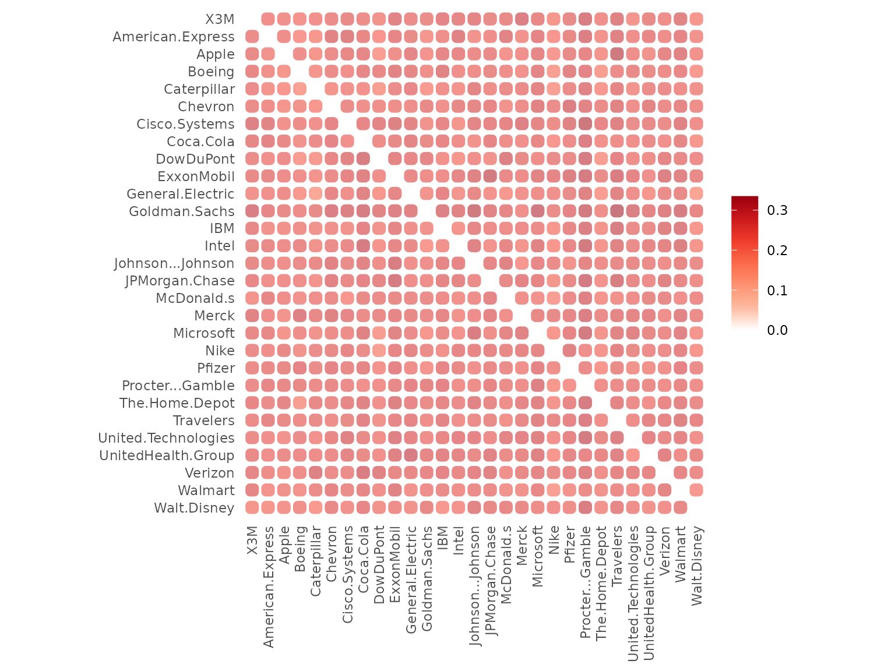
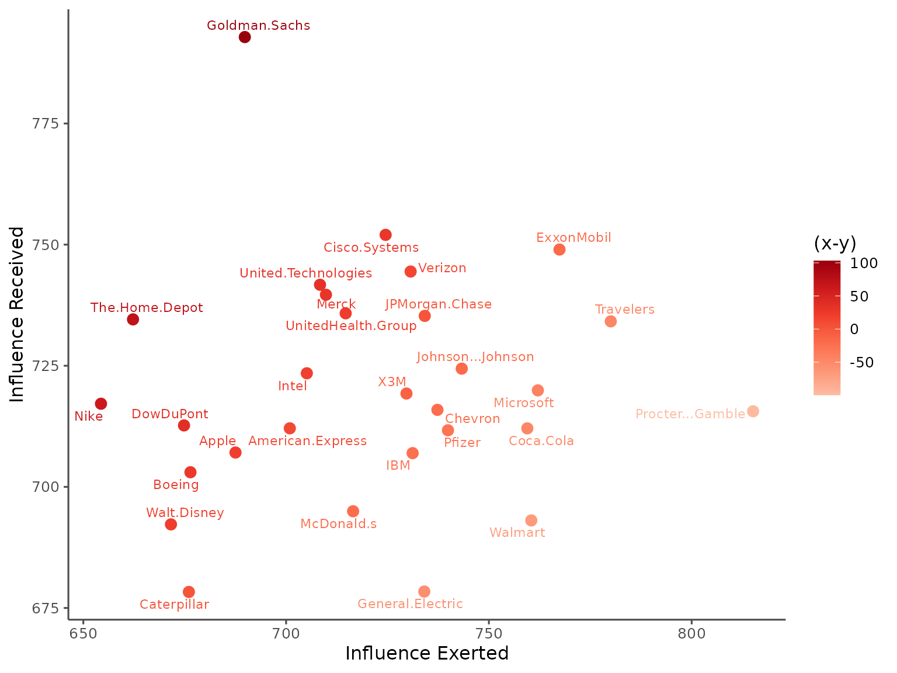
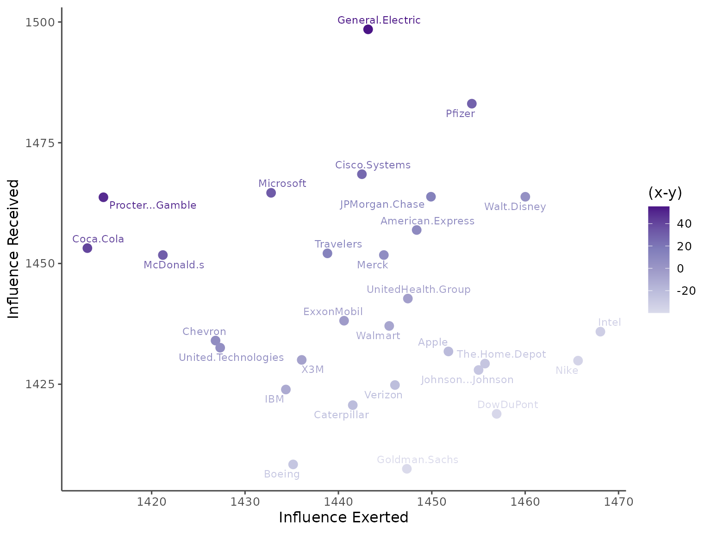
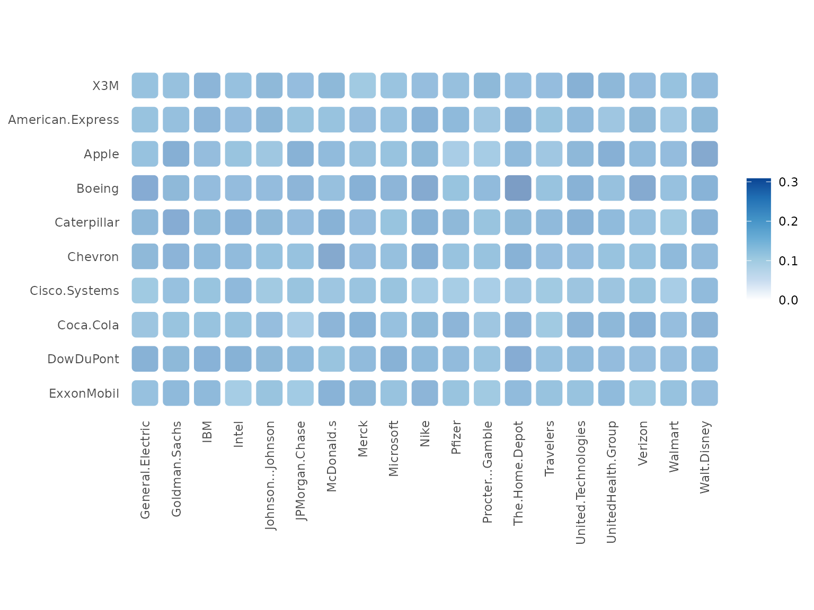

Multivariate Pattern Causality Analysis: Unveiling System-Wide Interactions
Stavros Stavroglou, Athanasios Pantelous, Hui Wang
Source:vignettes/matrix.Rmd
matrix.RmdThis vignette provides a comprehensive demonstration of multivariate pattern causality analysis, a powerful technique for investigating complex interactions within large-scale systems. This approach is particularly useful when dealing with multiple interconnected time series, allowing us to move beyond pairwise analysis and understand system-wide dynamics. The key aspects of this analysis include:
- Matrix-based causality assessment: Quantifying causal relationships between all pairs of time series in the system, represented in a matrix format.
- System-wide pattern identification: Identifying recurring patterns of behavior across the entire system, revealing underlying dynamics.
- Visualization of complex causal relationships: Using graphical representations to make intricate causal networks more understandable.
- Analysis of effects across the entire system: Measuring the overall impact of causality within the system, providing insights into the collective behavior.
The matrix-based approach is particularly well-suited for the study of:
- Financial market networks: Analyzing the interconnectedness of stock prices and other financial instruments.
- Economic systems: Understanding the relationships between various economic indicators and their impact on the overall economy.
- Social networks: Investigating the spread of information and influence within social structures.
- Complex ecological systems: Studying the interactions between different species and environmental factors.
Pattern Causality Matrix
In this vignette, we will utilize the DJS dataset, which comprises 29 stock price series. This dataset provides a sufficiently large and complex system to demonstrate the capabilities of our multivariate pattern causality analysis.
library(patterncausality)
data(DJS)
#head(DJS)Before estimating the causality matrix, it is crucial to determine
the optimal parameters for our analysis. These parameters, including the
embedding dimension (E) and time delay (tau),
significantly influence the accuracy and reliability of the results. We
use the optimalParametersSearch function to identify these
optimal values:
dataset <- DJS[,-1] # remove the date column
params <- optimalParametersSearch(
Emax = 3,
tauMax = 3,
metric = "euclidean",
dataset = dataset,
verbose = FALSE
)
print(params)With the optimal parameters identified, we can now estimate the
pattern causality matrix using the pcMatrix function. This
function calculates the causality between all pairs of time series in
the dataset, resulting in a matrix representation of the system’s causal
structure.
result <- pcMatrix(
dataset = dataset,
E = 3, # Embedding dimension
tau = 1, # Time delay
metric = "euclidean",
h = 1, # Prediction horizon
weighted = FALSE # Unweighted analysis
)The resulting analysis yields three matrices, each representing a
different aspect of causality: positive, negative, and dark causality.
These matrices can be accessed through the pc_matrix
object.
print(result)
#> Pattern Causality Matrix Analysis:
#>
#> Number of items: 29
#>
#> Positive causality matrix:
#> X3M American.Express Apple Boeing Caterpillar
#> X3M NA 0.2261268 0.2224979 0.2565688 0.2549020
#> American.Express 0.2318415 NA 0.2198748 0.2522231 0.2511664
#> Apple 0.2283262 0.2680412 NA 0.2622407 0.2674617
#> Boeing 0.2507485 0.2711864 0.2869058 NA 0.2675737
#> Caterpillar 0.2330168 0.2438080 0.2966432 0.3024545 NA
#> ...
#>
#> Negative causality matrix:
#> X3M American.Express Apple Boeing Caterpillar
#> X3M NA 0.2421696 0.2406948 0.2295209 0.2405732
#> American.Express 0.2523844 NA 0.2480438 0.2174616 0.2192846
#> Apple 0.2592275 0.2353952 NA 0.2456432 0.2248722
#> Boeing 0.2649701 0.2397094 0.2243536 NA 0.2290249
#> Caterpillar 0.2556611 0.2291022 0.2209212 0.2019002 NA
#> ...
#>
#> Dark causality matrix:
#> X3M American.Express Apple Boeing Caterpillar
#> X3M NA 0.5317036 0.5368073 0.5139104 0.5045249
#> American.Express 0.5157740 NA 0.5320814 0.5303153 0.5295490
#> Apple 0.5124464 0.4965636 NA 0.4921162 0.5076661
#> Boeing 0.4842814 0.4891041 0.4887406 NA 0.5034014
#> Caterpillar 0.5113221 0.5270898 0.4824356 0.4956453 NA
#> ...The plot function for object pc_matrix
provides a powerful tool for visualizing these complex matrices. By
plotting each causality type separately, we can gain a deeper
understanding of the system’s dynamics.
- Positive causality status
plot(result, "positive")
- Negative causality status
plot(result, "negative")
- Dark causality status
plot(result, "dark")
The visualization reveals a clear positive connection within the system, indicating a tendency for stocks to influence each other positively.
Pattern Causality Effect
Following the matrix calculation, we can quantify the total effect
within the system using the pcEffect function. This
function aggregates the causality measures to provide a system-wide
perspective on the overall impact of pattern causality.
effects <- pcEffect(result)
print(effects)
#> Pattern Causality Effect Analysis
#> --------------------------------
#>
#> Positive Causality Effects:
#> received exerted Diff
#> X3M 650.70 634.25 16.45
#> American.Express 630.98 650.71 -19.72
#> Apple 661.12 660.70 0.42
#> Boeing 688.59 688.43 0.15
#> Caterpillar 701.02 682.44 18.58
#> Chevron 650.07 635.85 14.22
#> Cisco.Systems 579.50 632.94 -53.44
#> Coca.Cola 634.74 627.41 7.34
#> DowDuPont 668.46 668.23 0.23
#> ExxonMobil 612.87 591.98 20.88
#> General.Electric 623.13 622.74 0.39
#> Goldman.Sachs 599.67 662.85 -63.18
#> IBM 669.13 634.43 34.70
#> Intel 640.67 626.83 13.84
#> Johnson...Johnson 647.65 601.69 45.96
#> JPMorgan.Chase 600.89 615.90 -15.01
#> McDonald.s 653.29 662.28 -8.99
#> Merck 608.59 645.31 -36.72
#> Microsoft 615.45 605.13 10.32
#> Nike 652.96 679.98 -27.02
#> Pfizer 605.23 605.80 -0.57
#> Procter...Gamble 620.69 570.01 50.67
#> The.Home.Depot 636.16 682.05 -45.89
#> Travelers 613.74 581.12 32.62
#> United.Technologies 625.72 664.30 -38.58
#> UnitedHealth.Group 621.44 637.87 -16.43
#> Verizon 630.72 623.24 7.48
#> Walmart 669.86 594.11 75.75
#> Walt.Disney 643.93 668.38 -24.45
#>
#> Negative Causality Effects:
#> received exerted Diff
#> X3M 719.26 729.68 -10.41
#> American.Express 712.08 700.91 11.17
#> Apple 707.09 687.52 19.57
#> Boeing 703.02 676.41 26.60
#> Caterpillar 678.31 676.03 2.28
#> Chevron 715.89 737.31 -21.42
#> Cisco.Systems 752.02 724.54 27.48
#> Coca.Cola 712.08 759.47 -47.40
#> DowDuPont 712.68 674.83 37.85
#> ExxonMobil 748.99 767.41 -18.42
#> General.Electric 678.39 734.08 -55.69
#> Goldman.Sachs 792.84 689.82 103.02
#> IBM 706.97 731.20 -24.23
#> Intel 723.44 705.11 18.33
#> Johnson...Johnson 724.40 743.30 -18.90
#> JPMorgan.Chase 735.29 734.19 1.10
#> McDonald.s 694.97 716.52 -21.56
#> Merck 739.65 709.82 29.83
#> Microsoft 719.92 762.08 -42.16
#> Nike 717.16 654.36 62.80
#> Pfizer 711.68 739.91 -28.23
#> Procter...Gamble 715.60 815.15 -99.54
#> The.Home.Depot 734.57 662.25 72.32
#> Travelers 734.16 780.05 -45.89
#> United.Technologies 741.72 708.36 33.35
#> UnitedHealth.Group 735.82 714.69 21.13
#> Verizon 744.45 730.70 13.74
#> Walmart 693.07 760.45 -67.38
#> Walt.Disney 692.26 671.61 20.65
#>
#> Dark Causality Effects:
#> received exerted Diff
#> X3M 1430.04 1436.07 -6.03
#> American.Express 1456.93 1448.38 8.55
#> Apple 1431.79 1451.78 -19.99
#> Boeing 1408.40 1435.15 -26.75
#> Caterpillar 1420.67 1441.54 -20.87
#> Chevron 1434.04 1426.84 7.20
#> Cisco.Systems 1468.48 1442.52 25.97
#> Coca.Cola 1453.18 1413.12 40.06
#> DowDuPont 1418.86 1456.95 -38.08
#> ExxonMobil 1438.15 1440.61 -2.46
#> General.Electric 1498.48 1443.18 55.30
#> Goldman.Sachs 1407.49 1447.33 -39.84
#> IBM 1423.91 1434.37 -10.47
#> Intel 1435.88 1468.06 -32.17
#> Johnson...Johnson 1427.95 1455.01 -27.06
#> JPMorgan.Chase 1463.82 1449.91 13.91
#> McDonald.s 1451.75 1421.20 30.55
#> Merck 1451.75 1444.87 6.89
#> Microsoft 1464.63 1432.79 31.84
#> Nike 1429.88 1465.66 -35.78
#> Pfizer 1483.09 1454.29 28.80
#> Procter...Gamble 1463.71 1414.84 48.87
#> The.Home.Depot 1429.27 1455.70 -26.43
#> Travelers 1452.10 1438.83 13.27
#> United.Technologies 1432.56 1427.34 5.22
#> UnitedHealth.Group 1442.74 1447.44 -4.70
#> Verizon 1424.83 1446.06 -21.22
#> Walmart 1437.07 1445.44 -8.37
#> Walt.Disney 1463.81 1460.01 3.80The total effect of pattern causality can be observed, providing a measure of the overall strength of causal interactions within the system.
- Positive causality status
plot(effects, status="positive")
- Negative causality status
plot(effects, status="negative")
- Dark causality status
plot(effects, status="dark")
Cross Matrix analysis
Sometimes, we also need to face the problem that X has multiple
series, and Y also has multiple series, we want to know the causality
between each series in X and each series in Y, to save the computation
time, we can use the pcCrossMatrix function to get the
causality matrix from each series in X to Y.
This time we construct the datasets for X and Y in stock dataset.
dataset <- DJS[, -1]
X <- dataset[, 1:10]
Y <- dataset[, 11:29]Then we can estimate the causality matrix from each series in X to Y and give the new matrix from X to Y.
result_cross <- pcCrossMatrix(
X = X,
Y = Y,
E = 3,
tau = 1,
metric = "euclidean",
h = 1,
weighted = FALSE,
verbose = FALSE
)The new matrix will be saved in the result_cross object,
we can also plot the matrix by the plot function.
plot(result_cross, "positive")
This will show the causality matrix from each series in X to Y and the color of the matrix represents the causality strength in the whole period.
We provide the multiple types of multi-series pattern causality analysis here and it would be useful to face many different situatiuons for the matrix analysis and network analysis.